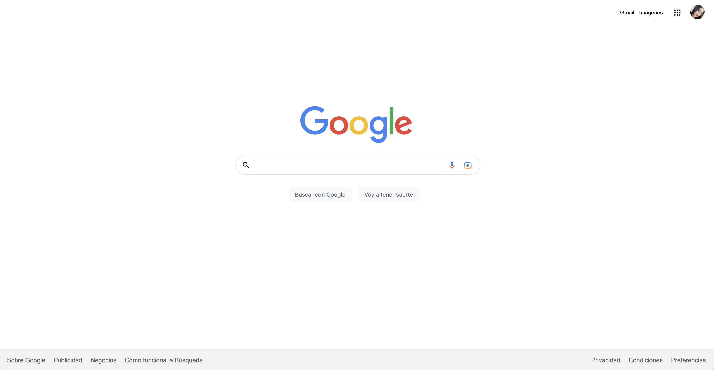

Mis proyectos recientes
Estos son algunos proyectos que he creado recientemente...




Soy una estudiante de Ingeniería en Sistemas Computacionales apasionada por el mundo digital. Mi enfoque se centra en el diseño web, especialmente en la creación de experiencias atractivas con CSS y el desarrollo front-end. Además, disfruto diseñando bases de datos funcionales y desarrollando aplicaciones móviles. Mi objetivo es combinar creatividad y tecnología para ofrecer soluciones innovadoras y eficientes en cada proyecto que emprendo.
Apasionada del Diseño Web
Me apasiona el diseño web. Disfruto mucho encontrando la combinación ideal de colores, fuentes, iconos y elementos visuales para crear proyectos de desarrollo web atractivos y efectivos. Cada proyecto es una oportunidad emocionante para desplegar mi creatividad y transmitir la esencia del trabajo en línea de manera impactante.
Versatilidad en programación
Tengo experiencia en una variedad de lenguajes de programación, lo que me permite adaptarme a diferentes proyectos de manera versátil y eficiente. Mi objetivo es contribuir al éxito de proyectos innovadores.
Formación Continua
Busco constantemente aprender y mantenerme actualizada tomando cursos en diversos temas relacionados con la progrmación y la tecnología. Mi compromiso con la formación continua me permite abordar nuevos desafíos y aportar soluciones innovadoras a los proyectos en los que participo.

Keyla ha desarrollado de manera eficiente sus habilidades en programación front-end, demostró ser una gran estudiante y bastante colaborativa con sus compañeras.
Nancy Salazar
Instructora Front-End en Tecnolochicas PRO.

Keyla mostró un rápido progreso en la adquisición de habilidades técnicas clave y una gran disposición para colaborar en proyectos. Su actitud positiva y su voluntad de aprender constantemente son cualidades valiosas en el campo de la programación. No tengo dudas de que Keyla seguirá creciendo y haciendo contribuciones significativas como desarrolladora frontend en el futuro..
Anel Montes de Oca Robles
Mentora de apoyo en Tecnolochicas Pro.

Es un placer recomendar a Keyla por sus habilidades de desarrollo en el bootcamp de Tecnolochicas PRO. Su dedicación y talento en programación son notables. Siempre aporta ideas valiosas y su actitud positiva hace que trabajar juntas sea un placer.
Cynthia Romo
Ingeniera de Software y Redes.

He tenido la oportunidad de colaborar con Keyla a lo largo del programa Tecnolochicas PRO 2023. Durante este, su desempeño fue óptimo, puesto que no solo realizó proyectos de calidad, sino también demostró responsabilidad y proactividad.
Nicole Zuzunaga Ponce
Ingeniera industrial.

He tenido la oportunidad de colaborar con Keyla a lo largo del Bootcamp de Tecnolochicas como desarrollador frontend. Realizó un trabajo de gran calidad y se demostró un amplio conocimiento en el área.
Daniela Chávez
Estudiante en Tecnolólogias.